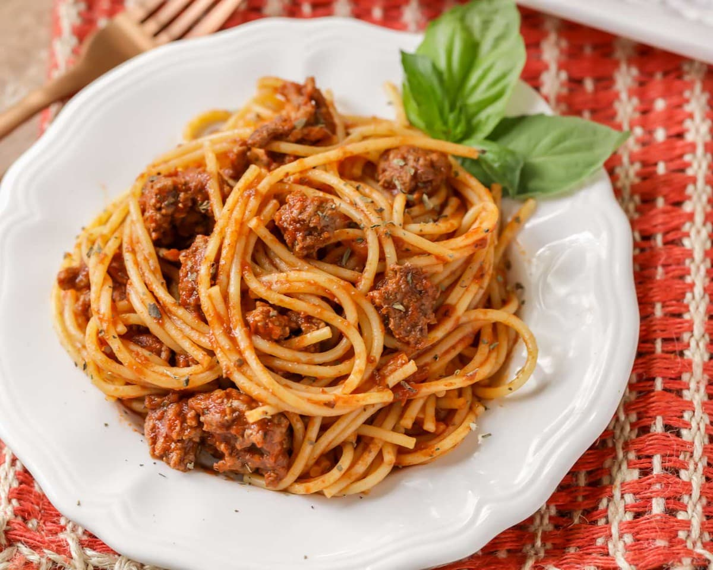

This page will teach you how to make spaghetti with simple ingredients.
Some ingredients that you will need:
- 1 lb hamburger meat
- 2 cubes beef bouillion
- 1 can tomato sauce 8 oz
- 1 can tomato paste 6 oz
- pepper to taste
- 2 cups hot water
- 2 teaspoon sugar
- 1/2 teaspoon dried basil
- 1/2 teaspoon dried oregano
- dash of garlic
- 16 oz spaghetti noodles
Here's how you make it:
- Brown your hamburger meat in a large pan.
- Once cooked, throw in salt, pepper, tomato sauce and paste, water (with the bouillon cubes in it), sugar, basil, oregano and garlic. Simmer on low for an hour.
- A few minutes before the hour is done, cook box of spaghetti noodles as directed on package.
- Once the noodles are cooked, drain and add to spaghetti sauce. ENJOY!